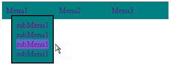

Сибирский государственный университет
телекоммуникаций и информатики
Лабораторные задания по курсу
"Интернет-технологии"
Лабораторная работа N 3.1
Создание выпадающего меню
Задание:
Сделать простое одноуровневое выпадающее меню:

Для этого необходимо:
- На каждый элемент главного горизонтального меню сделать обработчики событий:
- onMouseOver - показать соответствующее выпадающее меню
- onMouseOut - через заданное время (в виде константы) спрятать текущее подменю:
( можно сделать следующим образом: timer = setTimeout("CurrentMenu.style.display = 'none'",delay) )
- Каждое выпадающее меню изначально спрятано.
К подменю необходимо добавить следующие обработчики:
- onMouseOver - отменить таймер на закрытие: clearTimeout(timer);
- onMouseOut - такой же как у главного меню.
- Каждый элемент выпадающего меню должен быть интерактивным (изменение фона, цвета, начертания элемента, находящегося под курсором мыши)
- Как главное, так и выпадающие меню должны быть оформлены в виде слоев (div или span). Использование таблиц недопустимо.